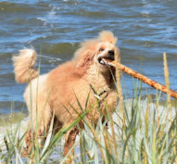
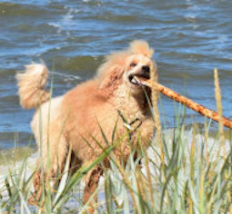

OFERTA
- strzyżenie
- trymowanie
- czesanie
- kąpiele
- czyszczenie uszu/usuwanie włosów z kanałów słuchowych
- obcinanie pazurków
- wizyty zapoznawcze
- porady w zakresie pielęgnacji, behawiorystyki i żywienia

*Strzyżenie:
York - 150 zł
Sznaucer mini - 150 zł
Maltańczyk - 160 zł
Shih-tzu - 160 zł
Pomeranian - 160 zł
Lhasa apso - 160 zł
Fox Terrier - 160 zł
Terier Walijski - 160 zł
West Highland White Terrier - 160 zł
Hawańczyk - 160 - 180 zł
Lagotto romagnolo - 200 - 250 zł
Bichon Frise - 200 zł
Pudel miniatura - 160 - 200 zł
Pudel średni - 180 - 250 zł
Pudel standard - 250 - 500 zł
*Trymowanie:
Jamnik - 150 zł
Cavalier - 160 zł
Jack / Parson Russel Terrier - 160 zł
Gryfonik - 180 zł
West Highland White Terrier - 220 zł
Szkocki Terier - 200 zł
Fox Terrier - 220 zł
Terier Walijski - 220 zł
Airedale Terrier - 350 - 450 zł
Cocker spaniel angielski / amerykański - 220 - 250 zł
Springer spaniel - 250 zł
Seter - 250 - 300 zł
*Psy krótkowłose:
*Małe psy np. Mops / Jamnik / Buldog Francuski - 100 zł
*Średnie i duże psy - 100 - 200 zł
*Duże psy o dwuwarstwowej strukturze włosa: Owczarek Niemiecki,
Golden, Berneński Pies Pasterski, Husky, Samoyed - 200 - 300 zł
*Psy długowłose do rozczesywania: Briard, PON, Coton de tulear,
york - cena ustalana indywidualnie.
Powyższy cennik zawiera jedynie orientacyjne ceny.
Duże rasy oraz usługi wymagające pracy dwóch osób przy jednym psie
koszt 110zł za godzinę. Fryzury wystawowe lub niestandardowe - wymagające
więcej czasu - cena do uzgodnienia.
 
